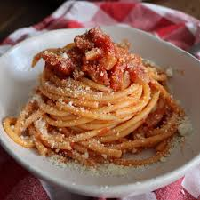

Spaghetti All'Amatriciana

Description
Pasta amatriciana is a traditional Italian dish that features a sauce of guanciale (salt-cured pork jowl), tomato, pecorino romano and chiles. Some variations include onion and white wine. The final product tastes much more complex than the ingredient list would suggest: This simple pantry meal delivers deep flavors, as the bright, tangy tomato base balances the rich pork, and a mix of dried peppers adds layers of subtle heat.
Ingredients
- Spaghetti 0.7 lb
- Guanciale 5 oz
- Peeled tomatoes 0.9 lb
- Pecorino Romano cheese 3/4 cup
- Extra virgin olive oil to taste
- Fine salt to taste
- Fresh chili pepper 1
- White wine 1/4 cup
Preparation
To prepare Spaghetti Amatriciana, first boil the water to cook the pasta in, then add salt. Then, let's prepare the sauce:
- Take the guanciale and remove the pork rind
- Cut it into slices about 1/4-inch (1 cm) thick
- then into strips about 1/8-inch (1/2 cm) wide
- Heat a drizzle of oil in a pan, preferably a stainless steel skillet, add the whole chili pepper and the guanciale cut into strips
- Brown over low heat for 7-8 minutes until the fat has melted and the meat is crunchy; stir often to prevent it from burning
- Once the fat has melted, pour in the white wine, turn up the heat and let it evaporate
- Transfer the guanciale to a plate and set aside
- Pour the peeled tomatoes into the same pan, breaking them up with your hands directly into the cooking liquid and continue cooking the sauce for about 10 minutes
- As soon as the water boils, pour in the spaghetti and cook them al dente
- Add salt to taste, remove the chili pepper from the sauce, add the guanciale strips to the pan and stir to mix
- Once the spaghetti are cooked, drain them and add them directly to the sauce in the pan
- Sauté the pasta very quickly to mix it well with the sauce and sprinkle with grated pecorino cheese
Your Spaghetti all'Amatriciana is ready to be served!